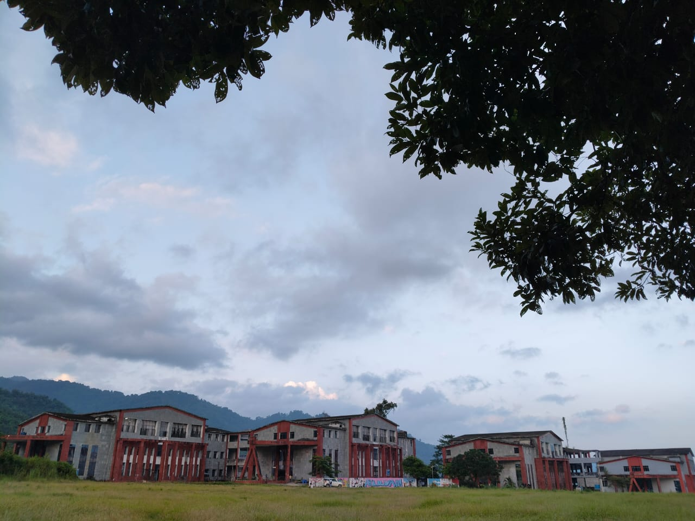
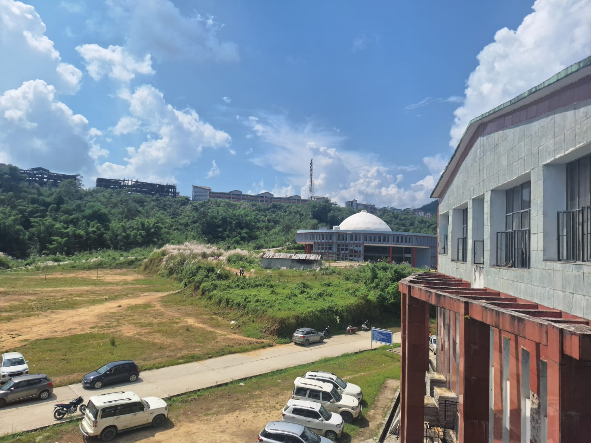
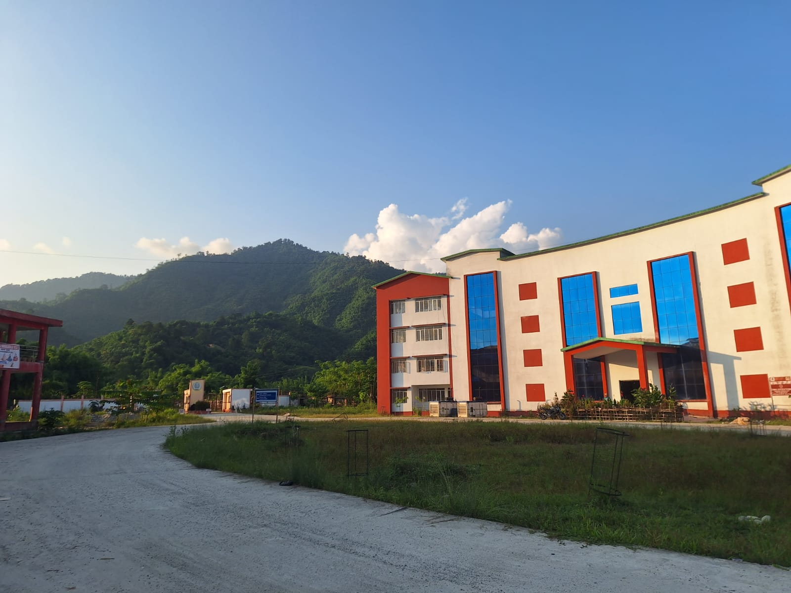

The National Institute of Technology, Arunachal Pradesh was established in the year 2010 by MHRD, Govt. of India and was inaugurated on 18th of August, 2010 as a member of a group of ten new NITs. These new NITs were established as centers of excellence in technical education to combat the growing need for technological professionals in India as well as in the world.
It is one of the 31 National Institutes of Technology in India and is recognized as an Institute of National Importance. Presently the Institute is running in the project phase with a yearly intake of 180 undergraduate students in five major Engineering departments such as Civil Engineering, Computer Science and Engineering, Electrical Engineering, Electronics and Communication Engineering and Mechanical Engineering.
Each department is equipped with well-established state-of-the-art laboratories to cater to the holistic development of the students. Despite a few geographical constraints, the Institute has thrived through rigorous challenges and has evolved to see new heights with a present capacity of 850 students pursuing various bachelor, master as well as doctorate degrees from the departments.
The faculty and students of the Institute are also engaged in various R&D projects sponsored by various Government agencies and the current value of such running projects is around 10 Crore.
